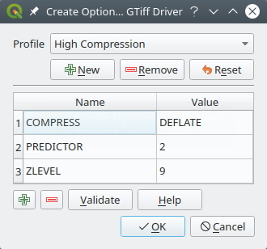

Keyboard Shortcuts…: define your own set of
keyboard shortcuts.
Also, they can be overridden during each QGIS session by the project
properties (accessible under Project menu).
Interface Customization…: configure the
application interface, hiding dialogs or tools you may
not need.
Options…: set global options to
apply in different areas of the software. These preferences are saved in the
active User profile settings and applied by default
whenever you open a new project with this profile.
Some basic options for QGIS can be selected using the
Options dialog. Select the menu option Settings ►Options.
You can modify the options according to your needs. Some of the changes may
require a restart of QGIS before they will be effective.
The tabs where you can customize your options are described below.
Note
Plugins can embed their settings within the Options dialog
While only Core settings are presented below, note that this list can be extended
by installed plugins implementing their own options into the
standard Options dialog. This avoids each plugin having their own config dialog
with extra menu items just for them…
By default, QGIS relies on your Operating System configuration to set language
and manipulate numerical values. Enabling this group allows you to customize
the behavior.
Select from User interface translation the language to apply to
the GUI
Select in Locale (number, date and currency formats) the system
on which date and numeric values should be input and rendered
Show group (thousand) separator
A summary of the selected settings and how they would be interpreted is
displayed at the bottom of the frame.
Application
Select the Style (QGIS restart required) ie, the widgets look and
placement in dialogs. Possible values depend on your Operating System.
Define the UI theme (QGIS restart required).
It can be ‘default’, ‘Night Mapping’, or ‘Blend of Gray’
Define the Icon size
Define the Font and its Size. The font can be
Qt default or a user-defined one
Change the Timeout for timed messages or dialogs
Hide splash screen at startup
Show QGIS news feed on welcome page: displays a curated
QGIS news feed on the welcome page, giving you a direct way to be aware of
project news (user/developer meetings date and summary, community surveys,
releases announcements, various tips…)
Check QGIS version at startup to keep you informed
if a newer version is released
Modeless data source manager dialog to keep the
data source manager dialog opened and allow
interaction with QGIS interface while adding layers to project
Project files
Open project on launch
‘Welcome Page’ (default): can display the “News” feed, the project
template(s) and the most recent projects (with thumbnails) of the
user profile. No project is opened by default.
‘New’: opens a new project, based on the default template
‘Most recent’: reopens the last saved project
and ‘Specific’: opens a particular project. Use the … button
to define the project to use by default.
Create new project from default project. You have the
possibility to press on Set current project as default or on
Reset default. You can browse through your files and define a
directory where you find your user-defined project templates. This will be
added to Project ► New From Template. If you first activate
Create new project from default project and then save
a project in the project templates folder.
Prompt to save project and data source changes when
required to avoid losing changes you made.
Prompt for confirmation when a layer is to be removed
Warn when opening a project file saved with an older
version of QGIS. You can always open projects created with older version of
QGIS but once the project is saved, trying to open with older release may fail
because of features not available in that version.
Enable macros. This option was created to handle
macros that are written to perform an action on project events. You can
choose between ‘Never’, ‘Ask’, ‘For this session only’ and
‘Always (not recommended)’.
Default paths: defines whether paths to files and layers used
in new projects are stored as ‘Absolute’ or ‘Relative’ to the project file.
This setting can be overwritten at the project level.
Default project file format
QGZ Archive file format, embeds auxiliary data
(see auxiliary data)
QGS Project saved in a clear text, does not
embed auxiliary data: the auxiliary data is stored in a separate .qgd
file along with the project file.
Add or Remove Path(s) to search for Scalable Vector Graphic (SVG)
symbols. These SVG files are then available to symbolize or label the features
or decorate your map composition.
Add or Remove Path(s) to search for additional C++
plugin libraries.
Documentation paths
Add or Remove Documentation Path(s) to use for QGIS help. By default,
a link to the official online User Manual corresponding to the version being used
is added. You can however add other links and prioritize them from top to bottom:
each time you click on a Help button in a dialog, the topmost link
is checked and if no corresponding page is found, the next one is tried,
and so on.
Note
Documentation is versioned and translated only for QGIS Long Term Releases (LTR),
meaning that if you are running a regular release (eg, QGIS 3.0), the help button
will by default open the next LTR manual page (ie. 3.4 LTR), which may contain
description of features in newer releases (3.2 and 3.4). If no LTR documentation
is available then the testing doc, with features from newer and development
versions, is used.
Settings
It helps you Reset user interface to default settings (restart required)
if you made any customization.
System environment variables can be viewed, and many configured, in the
Environment group. This is useful for
platforms, such as Mac, where a GUI application does not necessarily inherit
the user’s shell environment. It’s also useful for setting and viewing environment
variables for the external tool sets controlled by the Processing toolbox (e.g.,
SAGA, GRASS), and for turning on debugging output for specific sections of the
source code.
Use custom variables (restart required - include separators).
You can Add and Remove variables. Already defined environment
variables are displayed in Current environment variables, and it’s
possible to filter them by activating
Show only QGIS-specific variables.
There is an option to automatically set new project’s CRS:
Use CRS from first layer added: the CRS of the
project will be set to the CRS of the first layer loaded into it
Use a default CRS: a preselected CRS is applied by
default to any new project and is left unchanged when adding layers to the
project.
The choice will be saved for use in subsequent QGIS sessions.
The Coordinate Reference System of the project can still be overridden from
the Project ► Properties… ► CRS tab.
CRS for layers
Default CRS for layers: select a default CRS to use when you
create a layer
You can also define the action to take when a new layer is created,
or when a layer without a CRS is loaded.
Leave as unknown CRS (take no action)
Prompt for CRS
Use project CRS
Use a default CRS
Accuracy warnings
Only show warnings for CRS inaccuracies which exceed a given
distance: occurs when you are explicitly creating or modifying a dataset and
select a CRS based on a datum ensemble with lower
accuracy. The default is to Alwaysshow the warning if any inaccuracy.
Requires a QGIS version using at least PROJ 8.0.
Show warning for CRS inaccuracies for layers in project legend:
If checked, any layer with a CRS with accuracy issues (i.e. a dynamic crs with
no coordinate epoch available, or a CRS based on a datum ensemble with inherent inaccuracy
exceeding the user-set limit) will have the warning icon
in the Layers panel reflecting that it is a low-accuracy layer.
This is designed for use in engineering, BIM, asset management, and other fields where inaccuracies
of meter/submeter level are potentially very dangerous or expensive!
Planimetric measurements: sets the default for the
“planimetric measurements” property for newly created projects.
Copy features as ‘Plain text, no geometry’, ‘Plain text, WKT geometry’,
or ‘GeoJSON’ when pasting features in other applications.
Attribute table behavior: set filter on the attribute
table at the opening. There are three possibilities: ‘Show all features’,
‘Show selected features’ and ‘Show features visible on map’.
Default view: define the view mode of the attribute table at every
opening. It can be ‘Remember last view’, ‘Table view’ or ‘Form view’.
Attribute table row cache. This row cache makes
it possible to save the last loaded N attribute rows so that working with the
attribute table will be quicker. The cache will be deleted when closing the
attribute table.
Representation for NULL values. Here, you can define a value for
data fields containing a NULL value.
Tip
Improve opening of big data attribute table
When working with layers with big amount of records, opening the attribute table
may be slow as the dialog request all the rows in the layer. Setting the
Attribute table behavior to Show features visible on map will
make QGIS request only the features in the current map canvas when opening the
table, allowing a quick data loading.
Note that data in this attribute table instance will be always tied to the canvas
extent it was opened with, meaning that selecting Show All Features within
such a table will not display new features. You can however update the set of
displayed features by changing the canvas extent and selecting Show Features
Visible On Map option in the attribute table.
Data source handling
Scan for valid items in the browser dock. You can
choose between ‘Check extension’ and ‘Check file contents’.
Scan for contents of compressed files (.zip) in browser dock defines how detailed is the widget information at the bottom
of the Browser panel when querying such files. ‘No’, ‘Basic scan’ and ‘Full scan’
are possible options.
Prompt for raster sublayers when opening. Some rasters support
sublayers — they are called subdatasets in GDAL. An example is netCDF files
— if there are many netCDF variables, GDAL sees every variable as a
subdataset. The option allows you to control how to deal with sublayers when a file
with sublayers is opened. You have the following choices:
‘Always’: Always ask (if there are existing sublayers)
‘If needed’: Ask if layer has no bands, but has sublayers
‘Never’: Never prompt, will not load anything
‘Load all’: Never prompt, but load all sublayers
Automatically refresh directories in browser dock when
their contents change: Allows you to manually opt-out of monitoring directories
in the Browser panel by default (eg, to avoid potential slow down
due to network latency).
Localized data paths
It is possible to use localized paths for any kind of file based data source.
They are a list of paths which are used to abstract the data source location.
For instance, if C:\my_maps is listed in the localized paths,
a layer having C:\my_maps\my_country\ortho.tif as data source
will be saved in the project using localized:my_country\ortho.tif.
The paths are listed by order of preference, in other words QGIS will first look
for the file in the first path, then in the second one, etc.
Hidden browser paths
This widget lists all the folders you chose to hide from the Browser panel.
Removing a folder from the list will make it available in the Browser
panel.
Fig. 9.6 Rendering tab of Project Properties dialog
Rendering behavior
By default new layers added to the map should be
displayed: unchecking this option can be handy when loading multiple layers
to avoid each new layer being rendered in the canvas and slow down the process
Use render caching where possible to speed up redraws
Render layers in parallel using many CPU cores
Max cores to use
Map update interval (default to 250 ms)
Enable feature simplification by default for newly added layers
Simplification threshold
Simplification algorithm: This option performs a local
“on-the-fly” simplification on feature’s and speeds up geometry rendering. It
doesn’t change the geometry fetched from the data providers. This is important
when you have expressions that use the feature geometry (e.g. calculation of
area) - it ensures that these calculations are done on the original geometry,
not on the simplified one. For this purpose, QGIS provides three algorithms:
‘Distance’ (default), ‘SnapToGrid’ and ‘Visvalingam’.
Simplify on provider side if possible: the geometries
are simplified by the provider (PostGIS, Oracle…) and unlike the
local-side simplification, geometry-based calculations may be affected
Maximum scale at which the layer should be simplified
Besides the global setting, feature simplification can be set for any
specific layer from its Layer properties ► Rendering menu.
Rendering quality
Make lines appear less jagged at the expense of some
drawing performance
Curve segmentation
Segmentation tolerance: this setting controls the way circular arcs
are rendered. The smaller maximum angle (between the two consecutive vertices
and the curve center, in degrees) or maximum difference (distance between the
segment of the two vertices and the curve line, in map units), the more
straight line segments will be used during rendering.
Tolerance type: it can be Maximum angle or Maximum difference
between approximation and curve.
Rasters
With RGB band selection, you can define the number for the Red,
Green and Blue band.
The Zoomed in resampling
and the Zoomed out resampling methods can be defined.
For Zoomed in resampling you can choose between three
resampling methods: ‘Nearest Neighbour’, ‘Bilinear’ and ‘Cubic’.
For Zoomed out resampling you can choose between ‘Nearest Neighbour’
and ‘Average’.
You can also set the Oversampling value (between 0.0 and 99.99 - a large
value means more work for QGIS - the default value is 2.0).
Contrast enhancement
Contrast enhancement options can be applied to Single band gray,
Multi band color (byte/band) or Multi band color (>byte/band).
For each, you can set:
the Algorithm to use, whose values can be ‘No stretch’,
‘Stretch to MinMax’, ‘Stretch and Clip to MinMax’ or ‘Clip to MinMax’
the Limits (minimum/maximum) to apply, with values such as ‘Cumulative
pixel count cut’, ‘Minimum/Maximum’, ‘Mean +/- standard deviation’.
For rasters rendering, you can also define the following options:
Cumulative pixel count cut limits
Standard deviation multiplier
Debugging
Map canvas refresh to debug rendering duration in
the Log Messages panel.
the Default map appearance (overridden by project properties): the
Selection color and Background color.
Layer legend interaction:
Double click action in legend. You can either
‘Open layer properties’, ‘Open attribute table’ or ‘Open layer styling dock’
with the double click.
Display classification attribute names in the Layers
panel, e.g. when applying a categorized or rule-based renderer
(see Symbology Properties for more information).
the WMS getLegendGraphic Resolution
Minimum and Maximum legend symbol size
to control symbol size display in the Layers panel
the Delay in milliseconds of layers map tips display
Whether QGIS should Respect screen DPI: If enabled,
QGIS will attempt to display the canvas with physically
accurate scale on screen, depending on the monitor’s physical DPI. Symbology with specified
display size will also be rendered accurately, e.g. a 10mm
symbol will show as 10mm on screen. However, label font sizes on canvas may differ from those in
QGIS’ UI or other applications. If this setting is turned off, QGIS will use the operating
system’s logical DPI, which will be consistent with other applications on the system. However,
canvas scale and symbology size may be physically inaccurate on screen. In particular, on
high-dpi screens, symbology is likely to appear too small.
For best experience, it is recommended to enable Respect screen DPI,
especially when using multiple or different monitors and preparing visually high-quality maps.
Disabling Respect screen DPI will generate output that
may be more suitable for mapping intended for on-screen use only, especially
where font sizes should match other applications.
Note
Rendering in layouts is not affected by the Respect screen DPI
setting; it always respects the specified DPI for the target output device.
Also note that this setting uses the physical screen DPI as
reported by the operating system, which may not be accurate for all displays.
This tab offers some options regarding the behavior of the Identify tool.
Search radius for identifying features and displaying map tips is
a tolerance distance within which the identify tool will depict results
as long as you click within this tolerance.
Highlight color allows you to choose with which color features
being identified should be highlighted.
Buffer determines a buffer distance
to be rendered from the outline of the identify highlight.
Minimum width determines how thick should
the outline of a highlighted object be.
Measure tool
Define Rubberband color for measure tools
Define Decimal places
Keep base unit to not automatically convert large
numbers (e.g., meters to kilometers)
Preferred distance units: options are ‘Meters’, ‘Kilometers’,
‘Feet’, ‘Yards’, ‘Miles’, ‘Nautical Miles’, ‘Centimeters’, ‘Millimeters’,
‘Degrees’ or ‘Map Units’
Preferred area units: options are ‘Square meters’, ‘Square
kilometers’, ‘Square feet’, ‘Square yards’, ‘Square miles’, ‘Hectares’,
‘Acres’, ‘Square nautical miles’, ‘Square centimeters’, ‘Square millimeters’,
‘Square degrees’ or ‘Map Units’
Preferred angle units: options are ‘Degrees’, ‘Radians’,
‘Gon/gradians’, ‘Minutes of arc’, ‘Seconds of arc’, ‘Turns/revolutions’,
milliradians (SI definition) or mil (NATO/military definition)
Coordinate and Bearing Display
Define Default bearing format for new projects:
used to display the mouse coordinate in the status bar when panning
the map canvas. It can be overridden in the project properties dialog.
Panning and zooming
Define a Zoom factor for zoom tools or wheel mouse
Predefined scales
Here, you find a list of predefined scales to display in the status
bar Scale drop-down widget, for quick zoom. With the
and buttons you can add or remove your personal scales.
You can also import or export scales from/to a .XML file. Note that you
still have the possibility to remove your changes and reset to the predefined
list.
The 3D menu helps you configure some default settings to use
for any 3D Map view. These can refer to Default Camera Settings:
Projection type: allowing to view the 3D scene in a:
Perspective projection (default): Parallel lines appear to meet
in the distance. Objects appear to shrink the farther they are from the camera.
or an Orthogonal projection: Parallel lines appear parallel.
Objects appear the same size regardless of distance.
Camera’s Field of view: only relevant in perspective projection,
specifies the current vertical field of view in degrees and determines how much
of the scene is visible to the camera. Default value is 45°.
Navigation mode: provides different means to interact with the 3D scene.
Available modes are:
Terrain based: the camera follows around a fixed position on
the surface of the terrain as the scene is navigated.
Invert vertical axis: Controls whether vertical axis movements
should be inverted from their normal behaviour. Only affects movement in the
Walk mode. It can be set to:
Never
Only when dragging: causes the vertical motion to inverted only
when performing a click-and-drag camera rotation
and Always: causes the motions to be inverted when both
click-and-dragging and when the camera movement is locked to the cursor
(via a ~ key press)
This menu allows you to create or update palettes of colors used throughout the
application in the color selector widget. You can choose
from:
Recent colors showing recently used colors
Standard colors, the default palette of colors
Project colors, a set of colors specific to the current project
(see Default Styles Properties for more details)
New layer colors, a set of colors to use by default when new
layers are added to QGIS
or custom palette(s) you can create or import using the …
button next to the palette combobox.
By default, Recent colors, Standard colors and
Project colors palettes can not be removed and are set to appear in
the color button drop-down. Custom palettes can also be added to this widget
thanks to the Show in Color Buttons option.
For any of the palettes, you can manage the list of colors using the set of
tools next to the frame, ie:
Add or Remove color
Copy or Paste color
Import or Export the set of colors
from/to .gpl file.
Double-click a color in the list to tweak or replace it in the Color
Selector dialog. You can also rename it by double-clicking
in the Label column.
This tab helps you configure general settings when editing vector layer (attributes and geometry).
Feature creation
Suppress attribute form pop-up after feature creation:
this choice can be overridden in each layer properties dialog.
Reuse last entered attribute values: remember the last
used value of every attribute and use it as default for the next feature being digitized.
Works per layer. This behavior can also be controled on a per-field basis
(see Configure the field behavior).
Validate geometries. Editing complex lines and polygons with many
nodes can result in very slow rendering. This is because the default
validation procedures in QGIS can take a lot of time. To speed up rendering, it
is possible to select GEOS geometry validation (starting from GEOS 3.3) or to
switch it off. GEOS geometry validation is much faster, but the disadvantage
is that only the first geometry problem will be reported.
The next 3 options refer to the Offset Curve tool in
Advanced digitizing. Through the various settings, it is possible to
influence the shape of the line offset. These options are possible starting
from GEOS 3.3.
Join style: ‘Round’, ‘Mitre’ or ‘Bevel’
Quadrant segments
Miter limit
Tracing
By activating the Convert tracing to curve you can
create curve segments while digitizing. Keep in mind that your data provider
must support this feature.
GDAL is a data exchange library for geospatial data that supports a
large number of vector and raster formats.
It provides drivers to read and (often) write data in these formats.
The GDAL tab exposes the drivers for raster and vector
formats with their capabilities.
The Raster Drivers and Vector Drivers tabs
allow you to define which GDAL driver is enabled to read and/or
write files, as in some cases more than one GDAL driver is available.
This frame provides ways to customize the behavior of raster drivers that
support read and write access:
Edit create options: allows you to edit or add different profiles
of file transformation, i.e. a set of predefined combinations of parameters
(type and level of compression, blocks size, overview, colorimetry, alpha…)
to use when outputting raster files. The parameters depend on the driver.

Fig. 9.14 Sample of create options profile (for GeoTiff)
The upper part of the dialog lists the current profile(s) and allows you to
add new ones or remove any of them. You can also reset the profile to its
default parameters if you have changed them. Some drivers (eg, GeoTiff)
have some sample of profiles you can work with.
At the bottom of the dialog:
The button lets you add rows to fill with the parameter name and value
The button deletes the selected parameter
Click the Validate button to check that the creation options
entered for the given format are valid
The Variables tab lists all the variables available at the
global-level.
It also allows the user to manage global-level variables. Click the
button to add a new custom global-level variable. Likewise, select a custom
global-level variable from the list and click the button to remove
it.
Defines the Directory and a Size for the cache.
Also offers tools to automatically clear the connection authentication
cache on SSL errors (recommended).
Proxy for web access
Use proxy for web access
Set the Proxy type according to your needs and
define ‘Host’ and ‘Port’. Available proxy types are:
Default Proxy: Proxy is determined based on system’s proxy
Socks5Proxy: Generic proxy for any kind of connection.
Supports TCP, UDP, binding to a port (incoming connections) and authentication.
HttpProxy: Implemented using the “CONNECT” command, supports
only outgoing TCP connections; supports authentication.
HttpCachingProxy: Implemented using normal HTTP commands, it
is useful only in the context of HTTP requests.
FtpCachingProxy: Implemented using an FTP proxy, it is
useful only in the context of FTP requests.
Excluding some URLs can be added to the text box below the proxy settings (see
Fig. 9.18). No proxy will be used if the target url starts with one of
the string listed in this text box.
The Locator tab lets you configure the Locator bar, a quick search widget available on the status bar to help
you perform searches in the application.
It provides some default filters (with prefix) to use:
Project layers (l): finds and selects a layer in the Layers
panel.
Project layouts (pl): finds and opens a print layout.
Actions (.): finds and executes a QGIS action; actions can be any tool
or menu in QGIS, opening a panel…
Active layer features (f): searches for matching attributes in any field
from the current active layer and zooms to the selected feature.
Press to configure the maximum number of results.
Features in all layers (af): searches for matching attributes in the
display name of each searchable layers
and zooms to the selected feature.
Press to configure the maximum number of results and the maximum
number of results per layer.
Calculator (=): allows evaluation of any QGIS expression and, if valid,
gives an option to copy the result to the clipboard.
Spatial bookmarks (b): finds and zooms to the bookmark extent.
Settings (set): browses and opens project and application-wide properties
dialogs.
Go to coordinate (go): pans the map canvas to a location defined by a
comma or space separated pair of x and y coordinates or a formatted URL
(e.g., OpenStreetMap, Leaflet, OpenLayer, Google Maps, …).
The coordinate is expected in WGS 84 (epsg:4326) and/or map canvas CRS.
Nominatim geocoder (>): geocodes using the Nominatim
geocoding service of the OpenStreetMap Foundation.
Processing algorithms (a): searches and opens a Processing algorithm dialog.
Edit selected features (ef): gives quick access and runs a compatible
modify-in-place Processing algorithm on the
active layer.
In the dialog, you can:
customize the filter Prefix, i.e. the keyword to use to trigger
the filter
set whether the filter is Enabled: the filter can be used in the
searches and a shortcut is available in the locator bar menu
set whether the filter is Default: a search not using a filter
returns results from only the default filters categories.
Some filters provide a way to configure the number of results in a search.
The set of default locator filters can be extended by plugins, eg for OSM
nominatim searches, direct database searching, layer catalog searches, …
The Processing tab provides you with general settings
of tools and data providers that are used in the QGIS Processing framework.
More information at QGIS processing framework.
Autocompletion: Enables code completion. You can get
autocompletion from the current document, the installed API files or both.
Autocompletion threshold: Sets the threshold for displaying
the autocompletion list (in characters)
under Typing
Automatic parentheses insertion: Enables autoclosing
for parentheses
Automatic insertion of the ‘import’ string on ‘from xxx’:
Enables insertion of ‘import’ when specifying imports
under Run and Debug
Enable Object Inspector (switching between tabs may
be slow): Enable the object inspector.
Auto-save script before running: Saves the script
automatically when executed. This action will store a temporary file (in the
temporary system directory) that will be deleted automatically after running.
For APIs you can specify:
Using preloaded APIs file: You can choose if you would
like to use the preloaded API files. If this is not checked you can add API
files and you can also choose if you would like to use prepared API files
(see next option).
Using prepared APIs file: If checked, the chosen
*.pap file will be used for code completion. To generate a prepared API
file you have to load at least one *.api file and then compile it by
clicking the Compile APIs… button.
Under GitHub access token, you can generate a personal token
allowing you to share code snippets from within the Python code editor.
More details on GitHub authentication
In the Code Editor tab, you can control the appearance
and behaviour of code editor widgets (Python interactive console and editor,
expression widget and function editor, …).
At the top of the dialog, a widget provides a live preview of the current
settings, in various coding languages (Python, QGIS expression, HTML, SQL,
JavaScript). A convenient way to adjust settings.
Check Override code editor font to modify the default
Font family and Size.
Under the Colors group, you can:
select a Color scheme: predefined settings are Default,
SolarizedDark and SolarizedLight. A Custom scheme is triggered
as soon as you modify a color and can be reset with selecting a predefined
scheme.
change the color of each element in code writing,
such as the colors to use for comments, quotes, functions, background, …
All the settings related to QGIS (UI, tools, data providers, Processing
configurations, default values and paths, plugins options, expressions,
geometry checks…) are saved in a QGIS/QGIS3.ini file under the active
user profile directory.
Configurations can be shared by copying this file to other installations.
From within QGIS, the Advanced tab offers a way to manage these
settings through the Advanced Settings Editor.
After you promise to be careful, the widget is populated with a tree of all
the existing settings, and you can edit their value.
Right-click over a setting or a group and you can delete it
(to add a setting or group, you have to edit the QGIS3.ini file).
Changes are automatically saved in the QGIS3.ini file.
Warning
Avoid using the Advanced tab settings blindly
Be careful while modifying items in this dialog given that changes are
automatically applied. Doing changes without knowledge can break your
QGIS installation in various ways.
The Settings ► User Profiles menu provides functions to set
and access user profiles. A user profile is a unified application configuration
that allows to store in a single folder:
all the global settings, including locale,
projections, authentication settings, color palettes, shortcuts…
By default, a QGIS installation contains a single user profile named default.
But you can create as many user profiles as you want:
Click the New profile… entry.
You’ll be prompted to provide a profile name, creating a folder of the same name
under ~/<UserProfiles>/ where:
~ represents the HOME directory, which on Windows is usually
something like C:\Users\(user).
and <UserProfiles> represents the main profiles folder, i.e.:
.local/share/QGIS/QGIS3/profiles/
AppData\Roaming\QGIS\QGIS3\profiles\
Library/ApplicationSupport/QGIS/QGIS3/profiles/
The user profile folder can be opened from within QGIS using the
Open Active Profile Folder.
A new instance of QGIS is started, using a clean
configuration. You can then set your custom configurations.
If you have more than one profile in your QGIS installation, the name of the
active profile is shown in the application title bar between square brackets.
As each user profile contains isolated settings, plugins and history they can be great for
different workflows, demos, users of the same machine, or testing settings, etc.
And you can switch from one to the other by selecting them in the Settings ►
User Profiles menu. You can also run QGIS with a specific user profile from the
command line.
Unless changed, the profile of the last closed QGIS session will be used in the
following QGIS sessions.
Tip
Run QGIS under a new user profile to check for bug persistence
When you encounter weird behavior with some functions in QGIS, create a new user
profile and run the commands again. Sometimes, bugs are related to some leftovers
in the current user profile and creating a new one may fix them as it restarts
QGIS with the new (clean) profile.
In the properties window for the project under Project ►
Project Properties, you can set project-specific options.
The project-specific options overwrite their equivalent in the Options
dialog described above.
set the folder for the project home (available in the Project home item
of the Browser panel).
The path can be relative to the folder of the project file (type it in) or absolute.
The project home can be used for storing data and other content that is
useful for the project. Convenient when dataset and project files are not stored
at the same place
If not filled, the Project home defaults to the project file folder.
give a title to the project beside the project file path
choose the color to use for features when they are selected
choose the background color: the color to use for the map canvas
set whether the path to layers in the project should be saved as absolute
(full) or as relative to the project file location. You may prefer
relative path when both layers and project files can be moved or shared
or if the project is accessed from computers on different platforms.
choose to avoid artifacts when project is rendered as map tiles. Note that
checking this option can lead to performance degradation.
Calculating areas and distances is a common need in GIS. However, these values
are really tied to the underlying projection settings. The Measurements
frame lets you control these parameters. You can indeed choose:
the Ellipsoid, on which distance and area calculations are entirely
based; it can be:
None/Planimetric: returned values are in this case cartesian measurements.
a Custom one: you’ll need to set values of the semi-major and semi-minor axes.
or an existing one from a predefined list (Clarke 1866, Clarke 1880 IGN,
New International 1967, WGS 84…).
the units for distance measurements for length and perimeter and
the units for area measurements. These settings, which default
to the units set in QGIS options but then overrides it for the current project,
are used in:
Attribute table field update bar
Field calculator calculations
Identify tool derived length, perimeter and area values
Default unit shown in measure dialog
The Coordinate and Bearing display allows you to choose and
customize the bearing format and the format of units
to use to display the mouse coordinate in the status bar and the derived coordinates
shown via the identify tool.
Fig. 9.25 General tab of the Project Properties dialog
The Metadata tab allows detailed metadata to be defined,
including (among the others): author, creation date, language, abstracts,
categories, keywords, contact details, links, history. There is also a
validation functionality that checks if specific fields were filled, anyway
this is not enforced. See vector layer metadata properties for some details.
Fig. 9.26 View Settings tab of the Project Properties dialog
The View Settings tab provides means to control
the project map canvas. You can:
set Project predefined scales: the list of scales to display in
the status bar Scale drop-down widget. This overrides
the global predefined scales.
Set Project full Extent: this extent will be used instead of the
extent of all layers when zooming to full map extent ().
It’s useful when a project contains web layers/national layers/global layers
yet the actual area of interest for the project is a smaller geographic area.
The project full extent coordinates can be derived from an existing layer,
based on the current map canvas extent or defined by the user.
For more information on how QGIS handles project projection, please
read the dedicated section at Working with Projections.
The CRS tab helps you set the coordinate reference system
to use in this project. It can be:
No CRS (or unknown/non-Earth projection):
layers are drawn based on their raw coordinates
or an existing coordinate reference system that can be geographic,
projected or user-defined. Layers added to the project are translated
on-the-fly to this CRS in order to overlay them regardless their original CRS.
The Transformations tab helps you control the
layers reprojection settings by configuring the datum transformation preferences
to apply in the current project. As usual, these override any corresponding
global settings. See Datum Transformations for more details.
Using the Style Manager button, you can also quickly
access the Style Manager dialog and configure
symbols and color ramps.
There is also an additional section where you can define specific colors for the
running project. Like the global colors, you can:
Add or Remove color
Copy or Paste color
Import or Export the set of colors
from/to .gpl file.
Double-click a color in the list to tweak or replace it in the Color
Selector dialog. You can also rename it by double-clicking
in the Label column.
These colors are identified as Project colors and listed as part of
color widgets.
Tip
Use project colors to quickly assign and update color widgets
Project colors can be refered to using their label and the color widgets
they are used in are bound to them. This means that instead of repeatedly
setting the same color for many properties and, to avoid a cumbersome update
you can:
Hover over the Color menu and select the project color. The
property is then assigned the expression project_color('color_label')
and the color widget reflects that color.
Repeat steps 2 and 3 as much as needed
Update the project color once and the change is reflected EVERYWHERE
it’s in use.
Automatically create transaction groups where possible:
When this mode is turned on, all
layers from the same database are synchronised in their edit state,
i.e. when one layer is put into edit state, all are, when one layer is committed
or one layer is rolled back, so are the others. Also, instead of buffering edit
changes locally, they are directly sent to a transaction in the database which
gets committed when the user clicks save layer.
Note that you can (de)activate this option only if no layer is being edited
in the project.
Evaluate default values on provider side: When adding
new features in a PostgreSQL table, fields with default value constraint are
evaluated and populated at the form opening, and not at the commit moment.
This means that instead of an expression like nextval('serial'), the field
in the Add Feature form will display expected value (e.g., 25).
Trust project when data source has no metadata:
To speed up project loading by skipping data checks. Useful in QGIS Server context
or in projects with huge database views/materialized views. The extent of layers
will be read from the QGIS project file (instead of data sources) and when
using the PostgreSQL provider the primary key unicity will not be
checked for views and materialized views.
Configure the Layers Capabilities, i.e.:
Set (or disable) which layers are identifiable, i.e. will respond to the
identify tool. By default, layers are set queryable.
Set whether a layer should appear as read-only, meaning that
it can not be edited by the user, regardless of the data provider’s
capabilities. Although this is a weak protection, it remains a quick and handy
configuration to avoid end-users modifying data when working with file-based layers.
Define which layers are searchable, i.e. could be queried using the
locator widget. By default, layers are set searchable.
Define which layers are defined as required. Checked layers in this list
are protected from inadvertent removal from the project.
Define which layers are private, i.e. hidden from the Layers
panel. This is meant for accessory layers (basemap, join, lookups for
value-relations, most probably aspatial layers, …) that you still need
in a project but you don’t want them to pollute the legend tree and other
layer selection tools. If set visible, they are still displayed in the map
canvas and rendered in the print layout legend. Use the Filter legend ► Show private layers option in the
Layers panel top toolbar to temporarily turned them on
for any interaction.
The Layers Capabilities table provides some convenient tools to:
Select multiple cells and press Toggle Selection to have them change
their checkbox state;
Show spatial layers only, filtering out non-spatial
layers from the layers list;
Filter layers… and quickly find a particular layer to
configure.
The Relations tab is used to define 1:n relations and polymorphic relations. The relations
are defined in the project properties dialog. Once relations exist for a layer,
a new user interface element in the form view (e.g. when identifying a feature
and opening its form) will list the related entities. This provides a powerful
way to express e.g. the inspection history on a length of pipeline or road segment.
You can find out more about 1:n relations support in Section Creating one or many to many relations.
The Variables tab lists all the variables available at
the project’s level (which includes all global variables). Besides, it
also allows the user to manage project-level variables. Click the
button to add a new custom project-level variable. Likewise, select a custom
project-level variable from the list and click the button to
remove it.
More information on variables usage in the General Tools
Storing values in Variables section.
The Macros tab is used to edit Python macros for projects. Currently,
only three macros are available: openProject(), saveProject() and
closeProject().
The tab QGIS Server allows you to configure your project in order
to publish it online. Here you can define information about the QGIS
Server WMS and WFS capabilities, extent and CRS restrictions. More information
available in section Configure your project and subsequent.
The tab Temporal is used to set the temporal range of your project,
either by using manual input or by calculating it from the current project temporal layers.
The customization dialog lets you (de)activate almost every element in the QGIS
user interface. This can be very useful if you want to provide your end-users with a
‘light’ version of QGIS, containing only the icons, menus or panels they need.
Note
Before your changes are applied, you need to restart QGIS.
Ticking the Enable customization checkbox is the first step
on the way to QGIS customization. This enables the toolbar and the widget
panel from which you can uncheck and thus disable some GUI items.
the Status bar described in Status Bar or some of its items
a Toolbar: the whole bar or some of its icons
or any widget from any dialog in QGIS: label, button, combobox…
With Switch to catching widgets in main application, you
can click on an item in QGIS interface that you want to be hidden and
QGIS automatically unchecks the corresponding entry in the Customization dialog.
You can also use the Search box to find items by their name or label.
Once you setup your configuration, click Apply or OK to validate your
changes. This configuration becomes the one used by default by QGIS at the next startup.
The modifications can also be saved in a .ini file using Save To File button. This is a handy way to share a common QGIS
interface among multiple users. Just click on Load from File
from the destination computer in order to import the .ini file.
You can also run command line tools and save various
setups for different use cases as well.
Tip
Easily restore predefined QGIS
The initial QGIS GUI configuration can be restored by one of the methods below:
unchecking Enable customization option in the
Customization dialog or click the Check All button
pressing the Reset button in the Settings frame under
Settings ► Options menu, System tab
launching QGIS at a command prompt with the following command line
qgis--nocustomization
setting to false the value of UI ► Customization ►
Enabled variable under Settings ► Options menu,
Advanced tab (see the warning).
In most cases, you need to restart QGIS in order to have the change applied.
QGIS provides default keyboard shortcuts for many features. You can find them in
section Menu Bar. Additionally, the menu option
Settings ►Keyboard
Shortcuts… allows you to change the default keyboard shortcuts and add new
ones to QGIS features.
Configuration is very simple. Use the search box at the top of the dialog
to find a particular action, select it from the list and click on :
Change and press the new combination you want to assign as new shortcut
Set None to clear any assigned shortcut
or Set Default to backup the shortcut to its original and default value.
Proceed as above for any other tools you wish to customize. Once you have
finished your configuration, simply Close the dialog to have your changes
applied. You can also Save the changes as an .XML file
and Load them into another QGIS installation.
We’ve seen that launching QGIS is done as for any
application on your OS.
QGIS provides command line options for more advanced use cases (in some cases
you can use an environment variable instead of the command line option).
To get a list of the options, enter qgis--help on the command line, which
returns:
QGISisauserfriendlyOpenSourceGeographicInformationSystem.Usage:/usr/bin/qgis.bin[OPTION][FILE]OPTION:[--version]displayversioninformationandexit[--snapshotfilename]emitsnapshotofloadeddatasetstogivenfile[--widthwidth]widthofsnapshottoemit[--heightheight]heightofsnapshottoemit[--langlanguage]uselanguageforinterfacetext(changesexistingoverride)[--projectprojectfile]loadthegivenQGISproject[--extentxmin,ymin,xmax,ymax]setinitialmapextent[--nologo]hidesplashscreen[--noversioncheck]don't check for new version of QGIS at startup[--noplugins]don't restore plugins on startup[--nocustomization]don't apply GUI customization[--customizationfilepath]usethegiveninifileasGUIcustomization[--globalsettingsfilepath]usethegiveninifileasGlobalSettings(defaults)[--authdbdirectorypath]usethegivendirectoryforauthenticationdatabase[--codepath]runthegivenpythonfileonload[--defaultui]startbyresettinguseruisettingstodefault[--hide-browser]hidethebrowserwidget[--dxf-exportfilename.dxf]emitdxfoutputofloadeddatasetstogivenfile[--dxf-extentxmin,ymin,xmax,ymax]setextenttoexporttodxf[--dxf-symbology-modenone|symbollayer|feature]symbologymodefordxfoutput[--dxf-scale-denomscale]scalefordxfoutput[--dxf-encodingencoding]encodingtousefordxfoutput[--dxf-map-thememaptheme]mapthemetousefordxfoutput[--take-screenshotsoutput_path]takescreenshotsfortheuserdocumentation[--screenshots-categoriescategories]specifythecategoriesofscreenshottobeused(seeQgsAppScreenShots::Categories).[--profilename]loadanamedprofilefromtheuser's profiles folder.[--profiles-pathpath]pathtostoreuserprofilefolders.Willcreateprofilesinsidea{path}\profilesfolder[--version-migration]forcethesettingsmigrationfromolderversioniffound[--openclprogramfolder]pathtothefoldercontainingthesourcesforOpenCLprograms.[--help]thistext[--]treatallfollowingargumentsasFILEsFILE:Filesspecifiedonthecommandlinecanincluderasters,vectors,andQGISprojectfiles(.qgsand.qgz):1.Rasters-supportedformatsincludeGeoTiff,DEMandotherssupportedbyGDAL2.Vectors-supportedformatsincludeESRIShapefilesandotherssupportedbyOGRandPostgreSQLlayersusingthePostGISextension
Tip
Example Using command line arguments
You can start QGIS by specifying one or more data files on the command
line. For example, assuming you are in the qgis_sample_data
directory, you could start QGIS with a vector layer and a raster file
set to load on startup using the following command:
qgis./raster/landcover.img./gml/lakes.gml
This option allows you to create a snapshot in PNG format from the current view.
This comes in handy when you have many projects and want to generate
snapshots from your data, or when you need to create snapshots of the
same project with updated data.
Currently, it generates a PNG file with 800x600 pixels. The size can be adjusted
using the --width and --height arguments. The filename can
be added after --snapshot. For example:
Based on your locale, QGIS selects the correct localization. If you would like
to change your language, you can specify a language code. For example,
qgis--langit starts QGIS in Italian localization.
Starting QGIS with an existing project file is also possible. Just add the
command line option --project followed by your project name and QGIS will
open with all layers in the given file loaded.
If you have trouble at start-up with plugins, you can avoid loading them at
start-up with this option. They will still be available from the Plugins Manager
afterwards.
Using this option, any existing GUI customization
will not be applied at startup. This means that any hidden buttons, menu items,
toolbars, and so on, will show up on QGIS start up. This is not a permanent
change. The customization will be applied again if QGIS is launched without
this option.
This option is useful for temporarily allowing access to tools that have been
removed by customization.
Using this option, you can specify the path for a Global Settings
file (.ini), also known as the Default Settings. The settings in the specified
file replace the original inline default ones, but the user profiles’
settings will be set on top of those. The default global settings is located in
your_QGIS_PKG_path/resources/qgis_global_settings.ini.
Presently, there’s no way to specify a file to write settings to; therefore,
you can create a copy of an original settings file, rename, and adapt it.
Setting the qgis_global_setting.ini file path to a network shared
folder, allows a system administrator to change global settings and defaults in
several machines by only editing one file.
The equivalent environment variable is QGIS_GLOBAL_SETTINGS_FILE.
Assuming you are in the directory where the file load_alaska.py is
located, you can start QGIS, load the raster file landcover.img and give
the layer the name ‘Alaska’ using the following command:
On load, permanently resets the user interface (UI) to the default settings.
This option will restore the panels and toolbars visibility, position, and size.
Unless it’s changed again, the default UI settings will be used in the following
sessions.
Notice that this option doesn’t have any effect on GUI
customization. Items hidden by GUI customization (e.g. the
status bar) will remain hidden even using the --defaultui option. See also
the --nocustomization option.
On load, hides the Browser panel from the user interface. The panel
can be enabled by right-clicking a space in the toolbars or using the
View ► Panels (Settings ► Panels in
Linux KDE).
Unless it’s enabled again, the Browser panel will remain hidden in the following
sessions.
Takes screenshots for the user documentation. Can be used together with
--screenshots-categories to filter which categories/sections of the
documentation screenshots should be created (see QgsAppScreenShots::Categories).
With this option, you can choose a path to load and save the profiles (user
settings). It creates profiles inside a {path}\profiles folder, which
includes settings, installed plugins, processing models and scripts, and so on.
This option allows you to, for instance, carry all your plugins and settings
in a flash drive, or, for example, share the settings between different computers
using a file sharing service.
The equivalent environment variable is QGIS_CUSTOM_CONFIG_PATH.
Using this option, you can specify an alternative path for your OpenCL programs.
This is useful for developers while testing new versions of the programs
without needing to replace the existing ones.
The equivalent environment variable is QGIS_OPENCL_PROGRAM_FOLDER.
If you need to deploy QGIS within an organization with a custom configuration file,
first you need to copy/paste the content of the default settings file located in
your_QGIS_PKG_path/resources/qgis_global_settings.ini. This file already
contains some default sections identified by a block starting with [].
We recommend that you keep these defaults values and add your own sections at the bottom
of the file. If a section is duplicated in the file, QGIS will take the last
one from top to bottom.
You can change allowVersionCheck=false to disable
the QGIS version check.
If you do not want to display the migration window after a fresh install, you need
the following section:
[migration]fileVersion=2settings=true
If you want to add a custom variable in the global scope:
[variables]organisation="Your organization"
To discover the possibilities of the settings INI file, we suggest that you set
the config you would like in QGIS Desktop and then search for it in your INI
file located in your profile using a text editor. A lot of settings can be set
using the INI file such as WMS/WMTS, PostGIS connections, proxy settings, maptips…
Finally, you need to set the environment variable QGIS_GLOBAL_SETTINGS_FILE
to the path of your customized file.
In addition, you can also deploy files such as Python macros, color palettes,
layout templates, project templates… either in the QGIS system directory or
in the QGIS user profile.
Layout templates must be deployed in the composer_templates directory.
Project templates must be deployed in the project_templates directory.
Custom Python macros must be deployed in the python directory.
 Style Manager…: create and manage symbols,
styles and color ramps.
Style Manager…: create and manage symbols,
styles and color ramps. Custom Projections…: create your own
coordinate reference systems.
Custom Projections…: create your own
coordinate reference systems. Keyboard Shortcuts…: define your own set of
keyboard shortcuts.
Also, they can be overridden during each QGIS session by the project
properties (accessible under menu).
Keyboard Shortcuts…: define your own set of
keyboard shortcuts.
Also, they can be overridden during each QGIS session by the project
properties (accessible under menu). Interface Customization…: configure the
application interface, hiding dialogs or tools you may
not need.
Interface Customization…: configure the
application interface, hiding dialogs or tools you may
not need. Options…: set global options to
apply in different areas of the software. These preferences are saved in the
active User profile settings and applied by default
whenever you open a new project with this profile.
Options…: set global options to
apply in different areas of the software. These preferences are saved in the
active User profile settings and applied by default
whenever you open a new project with this profile. Show group (thousand) separator
Show group (thousand) separator .
It can be ‘default’, ‘Night Mapping’, or ‘Blend of Gray’
.
It can be ‘default’, ‘Night Mapping’, or ‘Blend of Gray’ Qt default or a user-defined one
Qt default or a user-defined one Hide splash screen at startup
Hide splash screen at startup QGS Project saved in a clear text, does not
embed auxiliary data: the auxiliary data is stored in a separate
QGS Project saved in a clear text, does not
embed auxiliary data: the auxiliary data is stored in a separate  warning icon
in the Layers panel reflecting that it is a low-accuracy layer.
warning icon
in the Layers panel reflecting that it is a low-accuracy layer.{kind=link}
 . This row cache makes
it possible to save the last loaded N attribute rows so that working with the
attribute table will be quicker. The cache will be deleted when closing the
attribute table.
. This row cache makes
it possible to save the last loaded N attribute rows so that working with the
attribute table will be quicker. The cache will be deleted when closing the
attribute table.{kind=link}
 and
and  buttons you can add or remove your personal scales.
You can also import or export scales from/to a
buttons you can add or remove your personal scales.
You can also import or export scales from/to a 
 3D menu helps you configure some default settings to use
for any 3D Map view. These can refer to Default Camera Settings:
3D menu helps you configure some default settings to use
for any 3D Map view. These can refer to Default Camera Settings: Copy or
Copy or  Paste color
Paste color Import or
Import or  Export the set of colors
from/to
Export the set of colors
from/to  Offset Curve tool in
Advanced digitizing. Through the various settings, it is possible to
influence the shape of the line offset. These options are possible starting
from GEOS 3.3.
Offset Curve tool in
Advanced digitizing. Through the various settings, it is possible to
influence the shape of the line offset. These options are possible starting
from GEOS 3.3.
 The Locator tab lets you configure the Locator bar, a quick search widget available on the status bar to help
you perform searches in the application.
It provides some default filters (with prefix) to use:
The Locator tab lets you configure the Locator bar, a quick search widget available on the status bar to help
you perform searches in the application.
It provides some default filters (with prefix) to use: to configure the maximum number of results.
to configure the maximum number of results. Processing tab provides you with general settings
of tools and data providers that are used in the QGIS Processing framework.
More information at QGIS processing framework.
Processing tab provides you with general settings
of tools and data providers that are used in the QGIS Processing framework.
More information at QGIS processing framework. Python Console settings help you manage and control
the behavior of the Python editors (interactive console,
code editor, project macros,
custom expressions, …).
It can also be accessed using the
Python Console settings help you manage and control
the behavior of the Python editors (interactive console,
code editor, project macros,
custom expressions, …).
It can also be accessed using the  Code Editor tab, you can control the appearance
and behaviour of code editor widgets (Python interactive console and editor,
expression widget and function editor, …).
Code Editor tab, you can control the appearance
and behaviour of code editor widgets (Python interactive console and editor,
expression widget and function editor, …). Windows is usually
something like
Windows is usually
something like 


 View Settings tab provides means to control
the project map canvas. You can:
View Settings tab provides means to control
the project map canvas. You can: ).
It’s useful when a project contains web layers/national layers/global layers
yet the actual area of interest for the project is a smaller geographic area.
The project full extent coordinates can be derived from an existing layer,
based on the current map canvas extent or defined by the user.
).
It’s useful when a project contains web layers/national layers/global layers
yet the actual area of interest for the project is a smaller geographic area.
The project full extent coordinates can be derived from an existing layer,
based on the current map canvas extent or defined by the user.{kind=link}
 option in the
Layers panel top toolbar to temporarily turned them on
for any interaction.
option in the
Layers panel top toolbar to temporarily turned them on
for any interaction.


 Switch to catching widgets in main application, you
can click on an item in QGIS interface that you want to be hidden and
QGIS automatically unchecks the corresponding entry in the Customization dialog.
You can also use the Search box to find items by their name or label.
Switch to catching widgets in main application, you
can click on an item in QGIS interface that you want to be hidden and
QGIS automatically unchecks the corresponding entry in the Customization dialog.
You can also use the Search box to find items by their name or label. Check All button
Check All button Linux KDE).
Linux KDE).